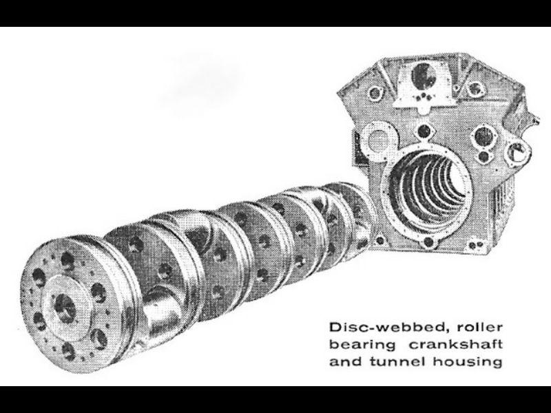
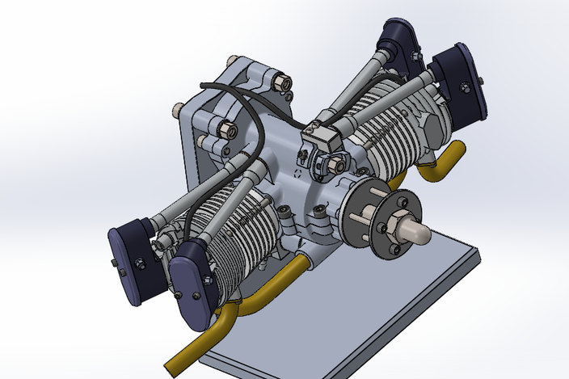
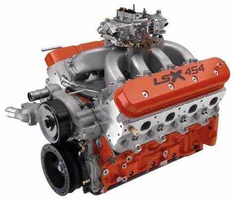
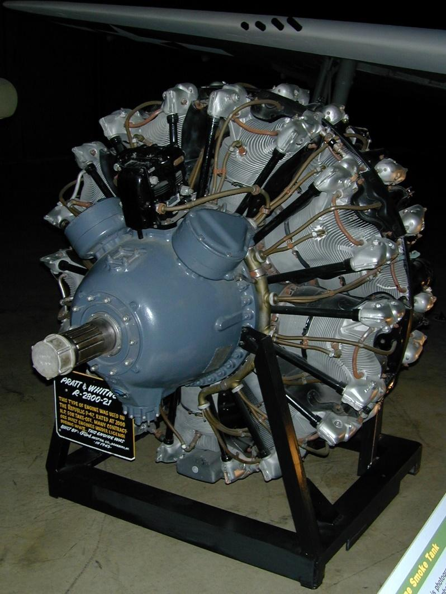

Researching German WW2 combat vehicle engines 75 years after the end of the war, is not all that simple. The German Army used a very wide variety of engines during the war, some in very small numbers; some were commercial engines while others were specifically produced for military applications. The majority of their fighting vehicles were powered by some variant of an engine produced by the Maybach company. Maybach produced an almost bewildering array of petrol (gasoline) engines between 1933 and 1945, many just as prototypes or produced in very small numbers; others in enormous numbers.
Although gross details, such as the type of engine, power, etc. of German WW2 engines are generally available, further technical details such as, for instance, the bore and stroke or displacement of a given engine are sometimes impossible to find. Often details such as the displacement of an engine varies between sources and even gross details such as the number of cylinders, configuration (inline or V-type), or whether the engine was diesel or petrol fuelled may differ between sources.
The list of engines discussed here is by no means exhaustive. The German forces used trucks from many manufacturers, including vehicles from countries they had occupied or from allied countries, such as Italy. These trucks from Opel, Mercedes, Ford, Magirus, Alfa Romeo, etc., used their own engines. Some of these trucks were converted to “Maultier” halftracks and these were generally powered by the original truck engines. The 6-wheeled armoured cars of the Sd. Kfz. 231 series were developed during the 1930s on the basis of 3 different commercial, truck chassis, i.e. Mercedes, Büssing-NAG and Magirus. Although they were externally similar, the cars were powered by commercial, water-cooled petrol engines from the original manufacturers(1). These included the Mercedes Benz M09 inline (straight) six-cylinder engine of 68 hp (3663 cc), the Magirus Deutz S88 inline six-cylinder engine of 70 hp (4562 cc) and a four-cylinder Büssing NAG engine of 65 hp. The six-wheeled cars were replaced by eight-wheeled examples of the Sd. Kfz 232 series and these were mostly powered by a Büssing NAG V8 engine of 150 or 180 hp(2).
Lesser known vehicles are also not mentioned as the engine details are simply not to be found. Various vehicles from occupied countries were employed by the Wehrmacht and these were powered by their own engines. Some are described here, notably the Czech Praga engines for the Pz. Kpfw 38t and its derivatives, as they were produced in large numbers under German occupation.

Some prototype engine developments that never went into production and of which few, if any, details are known, are also not discussed. During post-war interrogation, Ing. Ernest Kniepkamp referred, for instance, to a M.A.N. V6T11.5/16, V-12, supercharged 2-stroke diesel which was supposed to be ready in 1941 but was still not production ready in 1944. He also mentioned a 30 litre, V-12, petrol engine with rotary valves, designed to produce 900 hp, under development at the Adler works of Auto Union. A single cylinder trial unit produced 87.5 hp, which promised more than 1000 hp for the 12-cylinder engine. This was supposed to run in June 1945 but in Kniepkamp’s opinion, it would have taken three more years to get it production ready(3).
On the other hand, a number of engines which did not see service in German vehicles but were developed during the war for tank use, and about which more details are known, are discussed. These include powerplants from Daimler-Benz, Porsche, etc.
Some of the individuals who played an important part in the design, development and production of German armoured vehicles during the war, include Ing. Ernst Kniepkamp, Dr G.Stieler von Heydekampf, Prof. Karl Maybach and Prof. Ferdinand Porsche.
Dipl. Ing. H.E. Kniepkamp was enormously influential in the design and development of German combat vehicles during WW2. He joined the Heereswaffenamt in 1926 where he became intimately involved with the development of armoured and tracked vehicles. In 1932 he drafted the first set of guidelines for tanks and halftracks which resulted in the development of the Pz. Kpfw. I and six different sizes of half-tracked prime movers (tractors). He was the designer of the interleaved suspension with large, torsion bar suspended road-wheels (Schachtellaufwerk) seen in vehicles such as the German halftracks, the Panther and the Tiger tanks, and he was closely involved in the development of the semi-automatic Maybach Variorex and Olvar gearboxes. By the end of the war, Kniepkamp had submitted some 50 patents in the field of tracked vehicles. After WW2 he founded an engineering firm that served in a consulting and development role in the field of tracked vehicles. Kniepkamp died in 1977, at the age of 78 years(4).
Dr Von Heydekampf was born in Berlin, into an old, Prussian, aristocratic, military family. He studied engineering in Germany, emerging with a doctorate in 1929. He then spent several years working in the United States. On his return to Germany, he joined the Opel company, Germany’s largest automobile manufacturer at the time, where he became the general manager in 1938. In 1942, he relocated to Kassel, where he became the general manager of the Henschel group of companies. Henschel had by that time become a major tank producer in Germany.
In December 1943, he took over from Dr Ferdinand Porsche as the chairman of the Panzer Kommission. The Panzer Kommission operated under Speer’s Ministry for Armaments and War Production. This meant that Stieler Von Heydekampf was responsible for German tank production in 1944 and 1945.
After the war, Dr Stieler von Heydekampf joined the NSU company, a manufacturer of cars and motorcycles. NSU was later taken over by Volkswagen, which merged NSU with another VW company, Audi. He stayed on as managing director of NSU-Audi until he retired, after a heart attack, in 1971. He died in 1983.
After the war, Stieler Von Heydekampf was extensively interrogated by British intelligence. Some of the information he provided is referred to in this text(5).
Karl Maybach was born in Cologne, in 1879. After completing school, he attended the Höhere Machinenbauschule (“Higher Machine Building School”) in Stuttgard and the Polytechnikum in Lausanne. In 1906 he started working for the Daimler-Benz Motoren Gesellschaft. Later he worked in Paris and in 1909 he became the technical director of the engine plant of the Zeppelin airship company. In May 1918, the engine firm was renamed Maybach-Motorenbau Gmbh. Both Maybach and the Zahnradfabrik (ZF) gearbox company were originally part of Luftschiffbau Zeppelin GmbH (Zeppelin Airship Company), in Friedrichshafen, on lake Constance.
After the first world war, Germany was no longer allowed to build aircraft or airships and Maybach went on to develop diesel engines for marine applications and for trains. In the late twenties, the company started building luxury cars, the most famous probably being the Maybach DS-8 Typ “Zeppelin”, introduced in 1931. It was powered by the 200 hp, V-12, DSO engine.
His outstanding work in the development of engines for aircraft, airships, road vehicles and trains, was recognised by an honorary doctorate from the Technische Hochschule Stuttgard.
As the new German Army started rapidly expanding during the thirties, Maybach engines were to be found in most of the tanks and prime movers. By the end of the war, roughly 140.000 engines h
ad been delivered. Aside from engines, the company also developed tank gearboxes, notably the semi-automatic Variorex vacuum operated boxes and the Olvar hydraulic boxes. These were state of the art at the time of their introduction. After the war, the Maybach company reverted to developing high performance diesel engines for trains and ships, as well as automatic gearboxes.
On July 6, 1959, Karl Maybach celebrated both his 80th birthday and the 50th anniversary of the firm of Maybach Motorenbau. He died in February 6, 1960 in Friedrichshafen. The company continues today as part of MTU, formed by a merger of MAN, Mercedes-Benz and Maybach(6).
Ferdinand Porsche was an Austrian-German automotive designer who, during the second world war, was both a member of the Nazi Party and the SS, as well as a personal friend of Hitler. He was involved in many vehicle projects during war.
He was born into a metal working family but became interested in mechanical and electrical engineering. He attended the Technische Hochschule in Reichenberg and acquired considerable experience with electrical and hybrid powered vehicles, through the Egger-Lohner electric carriage produced in 1901, and a later hybrid version of this vehicle. Later, he went to work for several automotive companies, including Austro-Daimler, NSU, Zundapp and Merceds-Benz. In 1917, he received an honorary doctorate from the Technical University in Vienna. He received another honorary doctorate in 1924, this time from the Technische Hochschule in Stuttgard, for his part in the development of the two-litre, compressor (supercharged) Mercedes car that won the Targa Florio.
In 1929 he joined Steyr, in Austria for several years, where he designed and developed the Steyr V-8, air-cooled engine that powered the Steyr truck and the Raupenschlepper-Ost. He was an outspoken proponent for air-cooling and undoubtedly influenced Hitler in this respect as well.
Prof. Porsche had joined the Nazi Party before the war and became a personal friend of Hitler. He had a lot of influence and became the president of the Panzer Kommission, but by 1943, he had fallen into disfavour with the Army and with Speer’s Armament’s ministry. In December 1943, he was replaced by Dr Stiele von Heydekampf as president of the Panzer Kommission.
From the post-war interrogation of. Stiele von Heydekampf, it seems that the unhappiness with Porsche stemmed from the fact that he frequently came up with completely new and unorthodox designs, without any regard for past experience or existing production facilities, when a new weapon system was requested. This retarded development and production and, as illustrated by the saga of the Porsche Tiger, the resulting vehicle’s performance was also often unsatisfactory.
To quote from Jentz and Doyle’s book on the Tiger II: “Never satisfied with a single design that would lend itself to mass production, Dr Porsche pursued new and unproven inventions in his fixation with obtaining the highest automotive performance possible”(7).
The Heereswaffenamt was the central agency in Germany responsible for the development of armament, ammunition and equipment. It had various departments, such as Waffenamt Prüfwesen (Wa Prüf) 1 (ammunition and ballistics), Wa Prüf 2 (infantry), Wa Prüf 4 (artillery), etc., up to Wa Prüf 12. Wa Prüf 6 was the department responsible for the development of armour and motorised vehicles. This is the department to which Kniepkamp was attached and in which he played a major role(8).
The Germans had a philosophy for tank design which determined, to a large extent, the course of their engine and power train development during WW2. Tanks were basically designed to a certain weight. The design power-to-weight ratio was usually 15-20 metric hp/ton(9). This determined the power of the engine. Within the weight limit, the armour had to be as thick as possible. This in turn meant that everything else had to be as small and as light as possible, including the engine and drive train.
Horsepower is a function of engine speed, as will be seen later: the higher the rpm (revolutions per minute), the higher the power for a given engine. A given power figure can therefore be achieved either by having a small engine running at high speed, or a large engine running at a lower speed. Clearly, if a compact engine is required, the choice would be to have a smaller engine running at high rpm.
The choice of a smaller engine has another effect which was regarded as beneficial by German tank designers, at least during the nineteen thirties. If one calculates the torque produced by a hypothetical engine that produces 200 hp at 3000 rpm, one arrives at a torque figure of 475 N.m. For a hypothetical engine producing 200 hp at 2500 rpm, the torque figure is 570 N.m., i.e. 20% higher. The engine producing
the required power at lower RPM will be larger, all other factors being the same. A high torque engine also requires more robust drive line components, i.e. gear box, shafting, differential, bevel boxes, final drives, etc. More robust translates into heavier. That means the bigger heavier engine requires bigger, heavier drive line components to cope with the increased torque, for no increase in maximum power available. To stay within the design weight with such larger and heavier drive train components would require the armour to be thinner(9).There are several buts and however in this respect though. Torque at the wheels or driving sprockets is more important than absolute horsepower for a fighting vehicle. Fighting vehicles rarely have to run at high speed and high engine revolutions for any length of time. The ability to accelerate rapidly from a stationary position, or to negotiate difficult terrain at low speed is more often required of tanks. For vehicles like trucks or halftracks, the ability to pull heavy loads are important. These activities all demand high torque levels at the wheels or tracks. If a relatively small displacement, high performance, high revving engine is used, the required torque at the wheels can only be achieved by gearing down the engine significantly. To keep such a relatively small, high performance, tank engine running in its optimal revolution range therefore requires a relatively complex gearbox, with multiple gears.
Panther tanks, for instance, were fitted with ZF AK 7-200 boxes with seven forward gears(10). The later models of the Pz. Kpfw. III were fitted with 10-speed Maybach Variorex SRG 328 145, pre-selector gearboxes, and Pz. Kpfw IV tanks usually had manual ZF SSG Aphon gearboxes with 5 or 6 forward gears(11). The Tigers were fitted Maybach Olvar hydraulic gearboxes, featuring 8 forward and four reverse gears(12). These gear boxes were not cheap or simple, and increased complexity generally leads to reduced reliability.
It should be noted here that German attitudes to this torque business were ambiguous, or at least changed during the course of the war. In a presentation before the Reichsministerium für Rüstung (Department of Armaments), given by Prof. Dr-Ing. Eberan von Eberhorst, from the Technical University of Dresden, in April 1944, he stated that high torque at low RPM is important in a fighting vehicle engine because of its high tractive power and because it renders frequent gear changing superfluous. He showed that an engine with a 33% increase of torque at low compared to maximum revolutions, will require a 5-speed gearbox to achieve a certain amount of torque at the driving wheels, while a smaller, high performance tank engine, with high torque only at high rpm, will require a 9-speed gearbox to achieve the same performance(13). Torque will be further discussed later.
Aside from a lack of torque at low speeds, light-weight, high performance engines tend to suffer from high thermal and mechanical stress. This can result in poor reliability and this was indeed a major problem with the big Maybach engines, as we shall see.
Another factor in this equation is the matter of engine dimensions, especially engine length. A bigger, longer engine, will require a longer hull. To stay within a given design weight, the armour then has to be thinner. This explains why 50,000 of the 140,000 Maybach engines built during the war, were built using a tunnel type crank case where the main bearings run on the web of the crankshaft, resulting in very short overall engine length.

A graph in a German document from 1945 compares the amount of space taken up by the engine compartment in various German and Allied tanks. This is calculated as cubic meter per 100 metric hp(14):
| 0.75 m3 per 100 PS. | |
| Sherman (Continental radial engine): | 0.75 m3 per 100 PS. |
| Sherman (Ford GAA) | 0.58 m3 per 100 PS. |
| M10 (twin GM diesels) | 0.9 m3 per 100 PS. |
| Russian T34 (V2 diesel) | 0.7 m3 per 100 PS. |
| Panther (HL230) | 0.55 m3 per 100 PS. |
| Tiger II (HL230) | 0.63 m3 per 100 PS. |
Note the similarity between the German Maybach engines and the US Ford GAA. This will be discussed later.
The term petrol will be used in this document, rather than the American term gasoline.
The German Army used petrol engines for the majority of their combat vehicles during the war. Diesel engines were relatively far and few in between, and were mainly used in trucks, a few halftracks and some armoured cars. No German production tank was powered by a diesel engine but there was interest in diesels from the introduction of the first tank, in 1933, right to the end of the war. This was due to the increased range offered by diesel engines and the perceived decreased likelihood of a tank catching fire after being hit.
The standard octane rating for German land forces petrol was 74. Due to the relatively low octane rating, compression ratios for petrol engines varied between about 5.6:1 and 6.8:1. Octane ratings for petrol (gasoline) used by the Armies of the Allied powers varied from 67-70 octane for British pool petrol, to 80 octane for US gasoline.
A major problem in Germany during the war was the supply of oil. To add to the supply of natural oil, Germany produced large quantities of synthetic fuel from coal. Initially, it was not possible to produce large amounts of diesel with this technology. By the middle of 1942 however, using the Fischer-Tropsch process(15), it became possible for German industry to produce increasing quantities of diesel and this resulted in increased calls to produce diesel tank engines(16).
In December 1938, design guidelines for the development of diesel engines for tanks were issued by Wa Prüf 6 to German industry. Engines in the following power ranges were required:
Maximum power was defined as the maximum power which an engine could sustain for 100 hours of continuous running, without having to be overhauled afterwards. A number of additional requirements were stated, such as the ability to use locally produced diesel, with a cetane rating of 50, a flat torque curve, with a reduction of no more than 10% of torque between maximum rpm and 1/3 of maximum rpm, a maximum weight of 4.5 kg/hp for the smallest engines, and correspondingly less for more powerful units, etc.(17).
The first effort in Germany to fit a diesel engine in a tank was in 1934, when a Pz. Kpfw. I was fitted with a 45 hp Krupp diesel engine but the engine was simply too weak for the vehicle and no further development took place(18). As early as 1938, the Austrian Saurer Works received a contract to build a 350 hp diesel tank engine. Development work started in 1940 and two engines were actually produced (V-12, 120x160 mm bore and stroke, 21.7 litre displacement, and a weight of 1400 kg). No further development work took place however as there was no need for a 1400 kg, 350 hp tank engine at that time(19). Note that the 700 hp Maybach HL230 engine also weighed about 1400 kg.
This illustrates the problems with diesel engines at that period in time. Before efficient and compact supercharging or turbocharging became available, diesel engines were generally much larger and heavier than petrol engines of equivalent horsepower. This was especially true for Germany, where the Maybach company developed very compact and efficient petrol engines.
Dipl. Ing. Ernest Kniepkamp stated that the German Army demanded that a tank carry enough fuel to operate at “full power” for 5 hours, and that the bulk and weight of a petrol engine plus 5 hours’ worth of fuel was less than the bulk and weight of a diesel engine plus 5 hours’ worth of fuel, despite the substantially lower fuel consumption of the diesel and the smaller radiators(*) required for the diesel. Only if the tank was to operate for 10 hours without refuelling, would the bulk of the diesel engine plus diesel be less than that of the petrol engine plus petrol(20).
(*)Because the diesel is more efficient, there is less heat shedding with a diesel engine and this requires smaller radiators for cooling.
It is also interesting to note that Kniepkamp was of the opinion that the risk of fire after being hit was no less for a diesel-fuelled tank than for a petrol-engined one. He stated that firing trials showed that both will burn equally readily but petrol did have a greater tendency to explode. Petrol however gave fewer problems than diesel under the extremely cold temperatures encountered in Russia during winter(21).
The British came to the same conclusion regarding tanks catching fire after being hit. They noticed that diesel-engined tanks, such as the Valentine, caught fire just as often as petrol-engined ones. After towing several damaged tanks into the North African desert, stocking them fully with fuel and ammunition and shooting at them until they caught fire, they came to the conclusion that the major cause of catastrophic fire in tanks was the ammunition. Fire was less common in German tanks because their ammunition was stored in lightly armoured bins(22).
In a German report towards the end of the war, it was stated that petrol tank engines used between 6 and 9.5 litres of fuel per metric ton vehicle weight, per 100 km travelled. The Maybach HL230 was regarded as the most economical petrol engine while the British RR Meteor engine of the Cromwell and the 30-cylinder Chrysler multibank engine in the Sherman Vc were the least economical. For vehicles with 4-stroke diesel engines, such as the KV engine used in the T34, and the American T-1020 radial engine, the consumption varied between 4 to 6 litres of fuel per metric ton vehicle weight, per 100 km travelled. The consumption of the two-stroke GM diesel was found to be similar to the German HL230 petrol engine(23).
In June 1942, the Panzerkommission announced that Hitler had once again demanded the development of air-cooled diesel engines for use in armoured vehicles. Air cooling was regarded as being more reliable than water cooling. As mentioned previously, Prof. Ferdinand Porsche was an exponent of air cooling. He was a personal friend of Hitler and was highly regarded by the latter. It may well be that Hitler’s demand for air-cooled engines was influenced by Porsche.
The firms of Daimler-Benz, KHD, Krupp, Maybach, OAF, Opel, Phänomen, Tatra, Simmering, Steyr and WFI were asked to form a work committee and to share their experiences and ideas on this matter. An overview of the Army’s needs showed a requirement for diesel engines in eight sizes:
| Horsepower Range | Application |
|---|---|
| 30 hp | Volkswagen |
| 70-80 hp | Radschlepper Ost, Raupenschlepper Ost, Kettenrad, various trucks |
| 110-120 hp | Trucks, light half-tracks, light armoured cars |
| 200-220 hp | Heavy trucks, medium half-tracks, heavy armoured cars, light tanks |
| 280-320 hp | Heavy half-tracks |
| 530-570 hp | Tanks |
| 700-750 hp | Tanks |
| 1000-1200 hp | Tanks |
To achieve these goals, engines with 3 standard cylinder sizes were to be built, to be used in engines up to 18 cylinders, to achieve the required power requirements. The recommended cylinder sizes were 0.8 litre, 1.25 litres and 2.3 litres. These would produce 13 PS, 20 PS and 30-34 PS per cylinder respectively, without supercharging. It was expected that the largest engine would produce 40-45 PS per cylinder with supercharging(24).
It should be noted that the output for these engines, in normally aspirated form, would have been about 15-16 PS/litre. For the best performing petrol engines from this era, the output was almost twice that.
Aside from the excellent Tatra V-12 used in the Sd. Kfz. 234 (Puma) armoured car and the 4-cylinder Deutz diesel used in a small number of the Raupenschlepper Ost, none of these envisaged air-cooled diesels ever achieved service. For tank use, the Sla-16 came closest to being production ready.
As mentioned, the Heereswaffenamt (HWA) generally demanded a power-to-weight ratio of 15-20 hp/ton for new tank designs. This was practically never achieved as the tanks inevitably turned out heavier than originally intended, and/or the engines turned out weaker than originally intended. By the end of the war, the German heavy tanks barely managed 10 hp/ton.
The following figures provide a comparison of power-to-weight figures for various Allied and German tanks. They are from a German document, dated 1945, and give the ratio of metric horsepower (PS) to metric ton(14).
| Tank | Engine | PS per metric ton |
|---|---|---|
| British Cromwell | Meteor engine | 22.1 |
| Sherman | Continental radial engine | 13.1 |
| Sherman | Ford GAA engine | 16.2 |
| Sherman | twin GM diesel engines | 13.0 |
| M10 tank destroyer | twin GM diesels | 14.0 |
| Russian T34/85 | V2, 12 cylinder diesel | 16.8 |
| Panther | Maybach HL230 | 15.2 |
| Tiger II | Maybach HL230 | 10.0 |
The first German tank to go into mass-production was the Pz. Kpfw I (Ausf. A), which went into production in 1934. Just over 800 of these vehicles were produced between July 1934 and June 1936. The little tank weighed 5.4 tons and it was initially powered by a Krupp M305 engine of 57 hp, for a nominal power-to-weight ratio of just over 10 hp/litre. The engine drove a ZF Aphon FG 35 five speed manual gearbox. It was soon found that it was under-powered and that the air-cooled engine tended to overheat. A new, longer chassis was then designed and it was fitted with a larger, water-cooled, Maybach NL38TR engine. This increased the power-to-weight ratio to 15.5 hp/ton(25).
Maybach, by far the most important provider of fighting vehicle engines to the German forces in WW2, did not produce any air-cooled or diesel engines to power vehicles during the war. All their engines were four-stroke, liquid-cooled, petrol engines.
The Pz. Kpfw. II (Ausf. A) entered production in May 1936. It was powered by a Maybach HL57 engine of 130 hp, coupled to a ZF six speed gearbox. This was good for a power-to-weight ratio of 17 hp/ton. Subsequent versions of this tank received the Maybach HL62 of 140 hp but the tanks also became heavier and the power-to-weight ratio decreased to about 11.5 hp/metric ton. The final production version (only 12 produced) of the Pz. Kpfw. II was the Ausf. G, and this was fitted the Maybach HL66P engine of about 180 hp, for a power-to-weight ratio of 16.1 hp/ton(26).
The Pz. Kpfw. III went into production in 1937. The tank remained in production until 1943 but derivatives, such as assault guns and self-propelled artillery, stayed in production until the end of the war. It was initially fitted with a 260 hp Maybach HL108 engine, coupled to a ZF ZFG 75 five speed gearbox. The HL108 engine was later replaced by the ubiquitous HL120 TRM of 300 hp. This was coupled to a Maybach Variorex pre-selector gearbox, with 10 speeds forward and one reverse gear. This complex gearbox was vacuum operated. The Ausf. A weighed 15.4 tons but later derivatives weighed as much as 24 tons. The power-to-weight ratio therefore varied from about 16 hp/ton to as little as 12.5 hp/ton(27).
The Pz. Kpfw. IV was also produced from 1937 and its derivatives stayed in production for virtually the whole war. It used the same engines as the Pz. Kpfw. III, i.e. the Maybach HL108 for early versions and the HL120 for later versions. It used a different gearbox though: the ZF SSG 76 Aphon manual box, with 6 speeds forward and one reverse gear. Some of the later tank destroyer versions weighed as much as 28 tons, for a power-to-weight ratio of barely over 10 hp/ton(28).
The next major tank to enter production in Germany was the Tiger I (Tiger VI Ausf. E). The first prototype entered trials in April/May 1942, and the first eight production samples were delivered in August 1942. This vehicle initially weighed 54 metric tons and was powered by a 210 hp Maybach HL210 P45 engine of 650 hp, giving a power-to-weight ratio of 12 hp/ton. After the first 250 vehicles, the HL210 was replaced by the Maybach HL230 P45 engine of 700 hp. By 1944 however, the combat weight of the Tiger I had increased to 57000 kg. The power-to-weight ratio did therefore not improve significantly. It should also be noted that the HL230 engine was soon limited to 2500 rpm and no more than 600 hp, so that the true power-to-weight ratio for the tank was only about 10 hp/ton(29).
The first four Panther tanks were produced between November 1942 and January 1943. These and following vehicles revealed numerous flaws and defects during testing. These were corrected, as far as possible, during production. The first 250 vehicles were fitted with 650 hp Maybach HL210 engines but this was then replaced in production by the 700 hp Maybach HL230 derivative. By the end of May 1943, the Army had received 250 Panthers powered with the HL210 engine and 118, HL230-engined Panther Ausf. D tanks(30).
The Panther had a combat weight of around 45 tons, depending on which source one looks at. With the 700 PS Maybach HL230, the power-to-weight ratio was just over 15 PS/ton. With the engine limited to 2500 rpm and a power output of no more than 600 hp, the true power-to-weight ratio was less than 14 PS/ton.
The first production Tiger II (Ausf. B), “King Tiger”, was completed at the end of 1943. It weighed almost 70 metric tons and was also powered by the HL230 engine. At 700 hp, the power-to-weight ratio was 10 PS/ton, but with only 600 hp available, it was less than 9 hp/ton(31).
The Germans realized quite early that they would probably require a tank significantly bigger and heavier than the Pz. Kpfw. I, II, III and IV vehicles. The first mention of a 30-ton tank was in a report of the HWA in October 1935. To power the tank, the development of a 600-700 hp engine was discussed with Dr Maybach. At that stage, Maybach still had to prove that 300 hp could be reached by the V-12 engines then under development. He felt that more than 600 hp was not achievable in a V-12 engine design, using the technology then available. He suggested a V-16 engine but the representatives of the HWA pointed out that a V-16 would require a hull a 0.5 metre longer than for a V-12 design and that the additional power available from a V-16 compared to a V-12 would not increase the power-to-weight ratio as the hull would be significantly heavier(9).
This striving for compact (short) engines is a common theme in German tank design and led to unusual and interesting designs later in the war, such as H-16 or X-16 designs, rather than more conventional V-12 or V-16 engines. In this context, it is interesting to note that radial engines, extensively used by the US to power tanks, are particularly short in overall length. Although Germany did limited experimentation with radial engines in the Panther tank, and that results of these tests were promising, no German tank was ever produced using this type of engine.(32).
Failures of the cooling system was a major cause of liquid-cooled engine break downs at the time of WW2. This included failure of the water pump, hoses, thermostat, head-gaskets, radiator, etc. Furthermore, the use of various anti-freeze mixtures to prevent the cooling water from freezing in the engine and bursting various pipes or even the engine block, was uncommon in the nineteen thirties and forties. This meant that engines had to be drained after use and refilled before reuse, under freezing conditions. Because of these considerations, there was a perception that air-cooling was superior to liquid cooling for military vehicle engines. Armstrong Siddeley, in Britain, developed several prototype air-cooled tank engines in the 1920s but these were not followed up due to cost constraints(33).
The US made extensive use of air-cooled radial engines during WW2 and preferred air-cooling to liquid cooling. In 1943, when the decision was made to develop a new range of military engines, including engines for tanks, it was recommended that the engines be air-cooled. This led to the development of the Continental air-cooled petrol and diesel engines, including the iconic AVDS 1790 engine. The only other country that made extensive use of air-cooled tank engines during WW2 was Japan, which used air-cooled diesels in practically all their WW2 tanks, and continued to do so into the eighties of the previous century(33).
The Germans made limited use of air-cooled engines in military vehicles bigger than motorcycles. There was, of course, the little Volkswagen flat-four used in the Kübelwagen(29.1). The Kpfw. I used a larger, air-cooled, boxer engine, the Krupp M305(30.1). Porsche, a great proponent of air-cooling, designed V-10, air-cooled, petrol engines for their version of the Tiger(33.1). Air-cooled diesel engines were also used in the Sd. Kfz. 234 armoured car and in the Raupenschlepper Ost halftrack.
Under the influence of Prof. Ferdinand Porsche, Hitler demanded air-cooled diesel engines for tank use in July 1942 and again in December 1943. He stated that the engines were required for their greater fuel economy, the reduced fire risk and the greater reliability of air-cooling(34). It is interesting that Dr Stiele von Heydekampf, head of the Panzer Kommission after December 1943, preferred liquid-cooled engines. He felt that air-cooled engines required more space than liquid-cooled ones in view of the greater air-flow requirements. He also stated that such engines were complicated, bulky and suffered from poor valve accessibility(35). Dipl.-Ing. Ernest Kniepkamp also preferred liquid-cooling as air-cooled engines were more expensive to manufacture than similar liquid-cooled models(36).
The German term “aufgeladen” translates into “charged” or “pressure charged”. This can refer to pressure charging by either a mechanical supercharger or an exhaust gas driven turbocharger. In this document, the term “supercharging” will refer to mechanical supercharging while “turbocharging” will refer to an exhaust gas driven turbocharger. If neither is fitted, the engine is referred to as “normally aspirated”. In the literature, this is also sometimes referred as an “atmospheric” engine.
It should be noted that all 2-stroke diesels require a “blower” or supercharger, for normal functioning, not to increase power. A normally aspirated 2-stroke diesel does therefore have a low-pressure supercharger. An exhaust gas driven turbocharger can be added for a further increase in power, although this was not yet available during WW2.
Neither Germany nor the Allies made any use of supercharged or turbocharged petrol or diesel engines in ground vehicles during the war, except for the organic Rootes blower fitted to the GM two-stroke diesel engine. For Germany, the turbocharged, X-16, Simmering-Gras-Pauker engine was almost ready for production at the end of the war (see later).
In the tables below, the following details are given, if available.
| I | Inline (straight) configuration. |
| V | V configuration. |
| B | Boxer engine. Also referred to as a “flat” engine or a horizontally opposed engine. |
| H | Two boxer type engines superimposed. |
| X | Four inline blocks on a single crank case. |
| R | Radial engine. |





The British term “petrol” is used in this document, rather than the American term “gasoline”.
In this document, the bore (diameter of the cylinder) and the stroke of the crankshaft are given in centimeters. The displacement of a given engine is calculated as follows: (bore radius, in cm)2 x 3.142 x stroke (in cm) x no. of cylinders.
Example: for a 12-cylinder engine with a bore of 105mm (10.5cm) and a stroke of 115mm (11.5cm): 5.25 x 5.25 x 3.142 x 11.5 x 12 = 11950cc = 11.95 litres.
All displacements are primarily given in litres or cubic centimetres (cc). Where cubic inches are used (c.i.), it is calculated by dividing the displacement in c.c by 16.39.
Periods are used as decimal separators, i.e. 11952 cc may be written as 11.952 litres. Weights are given in metric ton (tonne), or kilogram (kg).
If the cylinder bore of a given engine is greater than the stroke, the engine is said to be over-square. If the reverse is true, the engine is said to be under-square. In general it may be said that under-square engines provide greater torque at low rpm while over-square engines can turn at higher revolutions and provide more horsepower without excessive piston speed.
Generally speaking, for petrol engines, under-square was the norm until world war 2. Over-square engines only became more common after the war. Almost all the engines discussed here were under-square units. Diesel engines were always under-square and to this day, truck and military type diesel engines are usually under-square, although fast-revving, car type diesels may be over-square.
Because of the low octane petrol used, the compression ratio of almost all the petrol engines discussed in this document all ranged between around 5.5:1 to 6.8:1. The compression ratio of the few diesel engines discussed varied between about 14.5:1 and 18:1.
In the table, power is given in kilowatt (Kw) with horsepower (hp) in brackets. Kw is converted to hp by dividing by 0.745. For instance: 100 Kw equals 134 hp. Horsepower figures are generally used in this text as most people are more familiar with this term and horsepower per ton figures are more commonly used, certainly in the English-speaking literature, than Kw/ton.
In this text, “hp” may refer to imperial horsepower or metric horsepower (PS). “PS” refers specifically to metric horsepower. Most of the figures given are metric horsepower. The difference is not great though. Metric hp = 735 watt (0.735 Kw) and imperial hp = 745 watt (0.745 Kw). Imperial hp values are therefore 98.6% of metric hp values. A hundred metric horsepower equals 98.6 imperial horsepower. For instance: the Maybach HL230 engine used in the Panther and Tiger is stated to develop 700 metric horsepower. This equals 690 imperial horsepower.
The horsepower values used are generally gross hp, i.e. without the power loss due to cooling fans, generators, compressors, etc. Losses to drive these ancillaries can be quite high. The air-cooled Sla-16 engine produced 770 metric hp but the cooling fans absorbed approximately 90 hp at full power(51.6). Early versions of the Porsche 101 air-cooled engine developed 300 hp but used 45 hp to turn the cooling fans. The water-cooled Maybach HL210 engine used in the Tiger I used about 55 of its 650 hp to turn cooling fans when maximum cooling was required(23.1). The WW2 Cadillac Series 42 engine, used in a number of allied armoured vehicles, produced 148 gross hp gross and 110 net hp(57.1).
As has already been mentioned, output figures presented for various engines may vary widely from source to source. For instance: for the widely used Maybach HL120 engine, 265 hp, 300 hp and 320 hp are all given as maximum power figures in different sources. For the Maybach HL45, different sources give 105, 120 or 150 hp as the maximum power. Please go to the appropriate sections for a further discussion of the power differences.
This is calculated by simply dividing the maximum horsepower figure by the displacement, in litres. Anything approaching 30 hp/l was regarded as high for the time period in question. It should be noted that power in excess of 30 hp/l, such as developed by the large Maybach engines, was exceptional for tank engines during WW2, and was really only equalled in the fifties.
Generally, engine output (horsepower) increases as the rpm increases. This is, of course, not unlimited. At the upper end of the hp range, the curve will flatten out. A useful figure to compare the efficiency of various engines is hp/litre/1000 rpm. For instance: the 21 litre Maybach HL210 developed 650 PS at 3000 rpm. That is 31 PS/litre, or 10,3 PS/litre/1000 rpm.
Torque is the measure of a force that causes an object to rotate around an axis. It is written as Newton-meter (N.m.) in SI units, or as foot-pounds (ft.lb) in imperial units. It consists of a force component (pound) and a distance (feet). If one applies a spanner (wrench) to a nut and the wrench handle is one foot long, and one applies 100 pounds of force to the end of the handle, the amount of torque applied to the nut is 100 ft.lb (100x1). If the handle is two feet long, one only has to apply 50 pounds to achieve 100 ft.lb of torque (50x2).
In the same way, if 1 kg of force is applied to a lever 1 meter long, the amount of torque applied will be 1 kg.m. One kg.m = 9.8 N.m.
Engine torque is a function of horsepower (or kilowatt) divided by revolutions per minute, multiplied by a constant, to give a result in either ft.lb or N.m. This means that an engine delivering 100 hp at 4000 rpm will generate approximately 180 N.m. of torque, while an engine delivering 100 hp at 3000 rpm, will generate 240 N.m. of torque.
The important issue for a vehicle however is not how much torque the engine generates, it is how much torque is generated at the driving wheels or drive sprocket. This is determined both by the engine torque as well as by the gearing applied. If the 180 N.m. torque engine is directly coupled to the wheels, the same amount of torque will be available at the wheels. If the engine drives the wheels through a 2:1 gear ratio, i.e. at 4000 engine rpm the wheels turn at 2000 rpm, the amount of torque at the wheels will doubled, that is 360 N.m. From this follows that a small engine, running at high rpm, can generate a lot of torque at the wheels if it is geared down a lot.
In motor vehicles, or tanks, high torque (at the wheels) is required to accelerate rapidly or to traverse difficult terrain. Torque is sometimes referred to as “Büffel Charakteristik” (Buffalo characteristics) in German texts. To achieve a great amount of torque at the wheels or driving sprocket, one either requires an engine which develops high torque at relatively low rpm, or one requires a gearbox with multiple gears. Most favourable is an engine that develops its maximum torque at relatively low rpm so that little down-gearing is required to achieve high torque at the driving wheels. This is usually achieved in engines that have a relatively large displacement for the amount of horsepower produced.
Because torque curves are not available for most of the engines discussed here, torque is calculated at maximum rpm for all engines, for comparison purposes. The values given are therefore not the maximum torque a given engine can produce. Maximum torque occurs at a lower rpm, usually between 50-80% of maximum rpm. This “torque at maximum rpm” figure is unfortunately not a particularly useful bit of information. What is much more interesting, is to know at what percentage of maximum rpm, maximum torque occurs: the lower, the better, is the general rule. Torque curves for the following engines give an idea of the relationship between torque at maximum rpm, the maximum amount of torque available from an engine, and the rpm range where maximum torque develops(37).
| Engine | Max. rpm | Maximum torque occurs at | Torque at max rpm | Torque at max torque rpm |
|---|---|---|---|---|
| Ford GAA | 2600 rpm | 1450 rpm (55%) | 1370 N.m. | 1535 N.m. |
| Maybach HL230 | 3000 rpm | 2100 rpm (70%) | 1660 N.m. | 1800 N.m. |
| Meteor Mk. 4B | 2550 rpm | 1600 rpm (62%) | 1780 N.m. | 2100 N.m. |
| GM 6-71 diesel | 2100 rpm | 1250 rpm (60%) | 560 N.m. | 660 N.m. |
| V2 diesel (T34) | 1800 rpm | 1100 rpm (60%) | 1980 N.m. | 2400 N.m. |
From this it is clear that the torque curve of the Ford GAA, for instance, was superior to those of the Maybach HL230. It also shows the superb torque characteristics of a large, four-stroke diesel engine, like the Russian V2.
As mentioned, torque is measured in foot-pounds (ft.lb) or in Newton-meter. Newton-meter (N.m.) is mainly used in this document. To convert N.m. to ft.lb, divide by 1.35. For instance: 100 N.m. = 74 ft.lb of torque.
Revolutions per minute.
MPS = (Stroke, in meters × 2 × RPM) / 60
An engine with a stroke of 125 mm will have an mps of 10.4 m/s (meters per second) at 2500 rpm. Increase the engine speed to 3000 rpm, and the mps becomes 12.5 m/s. An engine with a stroke of 150 mm will have an mps of 15 m/s at 3000 rpm.
In general, the higher the mean piston speed, the greater the mechanical and thermal stresses on the engine. In general, for large, commercial, diesel engines, the mps is held below 11.5 m/s but for modern tank engines, a higher figure may be tolerable for a limited period of time. Petrol engines during the war tended have somewhat higher mps figures. Ing. Kniepkamp felt that the mps should be kept below 15 m/s for high performance, petrol, tank engines(38).
This theoretical figure is the mean pressure which, if imposed on the pistons uniformly from top to bottom of each power stroke, would produce the measured (brake) horsepower of an engine. It is most often given in Bar or in pounds per square inch (psi), with 1 Bar equal to 14.5 psi. It is a function of the pressure of the combustion gasses in the cylinder. If more fuel is burnt in the combustion chamber during a power stroke, with all other factors remaining the same, more pressure will be generated, i.e. the BMEP will increase and torque output of the engine will increase. If a given amount of fuel is burned more efficiently, the result will be the same.
Torque is a function of BMEP and displacement while horsepower is a function of torque and rpm. Leaving all the constants and conversion factors out of the equation, the following is true:
Horsepower = Torque × rpm
Torque = horsepower / rpm
BMEP = torque / displacement
Torque = BMEP × displacement
BMEP indicates the efficiency of a given engine at producing torque from a given displacement. The power of a given engine is usually given in horsepower (or kilowatt) at a certain rpm. If two engines are the same size and run sat the same speed, but one has a higher BMEP, the engine with the higher BMEP will have more power at the same rpm, i.e. it is more efficient. During WW2, any BMEP greater than 9 Bar in a 4-stroke engine could be considered as excellent.
There are various ways of calculating BMEP and the various formulas may give slightly differing results. It is also possible to simply enter the required details into one of the “BMEP calculators” found on the net. A typical formula for calculating BMEP is:
BMEP = (Kw x 60) / (L x A x (Cx100) x N/2)
Where:
A 2-stroke (two-cycle) engine only requires half the BMEP of a similar-sized 4-stroke engine to produce the same power at the same rpm because a 4-stroke engine only has a power stroke per every two revolutions while a 2-stroke engine has a power stroke with every revolution.
The above formula converts power output, in Kw, to torque, in N.m., and then divides the result by the displacement, number of cylinders and the RPM. The result is modified by constants to give a result in Bar or pounds per square inch (psi). This implies that if the power of a given engine increases, with all other elements remaining constant, the BMEP will be increased. If the power remains the same and the displacement, and/or number of cylinders and/or rpm is increased, the BMEP will be reduced.
A simpler formula that gives similar results is (4-stroke engine):
BMEP (Bar) = (Hp x 900) / (Litre x rpm)
For example: The 23 litre Maybach HL 230 produced 700 hp at 3000 rpm:
BMEP = (700 x 900) / (23 x 3000) = 9.13 Bar